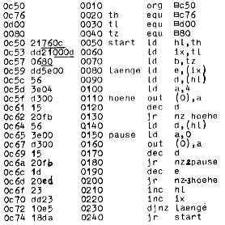
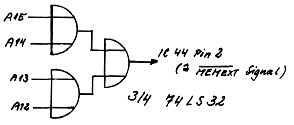

Nascom Journal |
Juni 1981 · Ausgabe 6 |
Vielleicht haben Sie schon das Programm „Nascom spielt Melodien“ aus dem Journal 6,7/1980 S. 4 eingetippt und waren über die Geschwindigkeit der Melodie erstaunt? Kein Wunder, das Programm war für 1 MHZ Takt konzipiert! Obwohl die Spielweise unserem hektischen Zeitalter entspricht, haben sich einige Leser daran gestört. Herr Peter Block aus Neckargemünd hat das Problem einfach gelöst, indem er die Tonperioden durch eine zusätzliche Zeitschleife verlängerte. Auf diese Weise muß in der Tonhöhen- bzw. Tonlängentabelle nichts geändert werden, und die Melodie erklingt dennoch gemütlich barock 1 Oktave tiefer und halb so schnell. Zudem ist das Programm nun voll verschiebbar; es existiert kein absoluter Sprung mehr. Zum Abspielen anderer Melodien als in Heft 6,7 beschrieben, sind nur die unterstrichenen Codes zu verändern (Tonhöhentabelle, Tonlängen, Tonanzahl) Hinweise dazu in Heft 6,7/80 Seite 18.

G.B.
Erzeugung des IOEXT Signals und Änderung seiner Verschaltung
IC 46 Pin 2 direkt an A2
IC 46 Pin 5 und IC 45 Pin 1 an folgende
Schaltung:
Damit ist das PIO auf die Adressen 4-7 festgelegt,auch die anderen Ports sind nicht mehr in ihren Adressen veränderbar.
Mit den übrigen Gattern kann man das MEMEXT-Signal erzeugen.(Dann funktioniert der Monitor auch ohne RAM-Board.
|
Michael Bach
|
| Seite 9 von 20 |
|---|